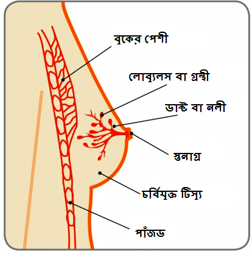

স্তনবৃন্ত

স্তনের বেশীরে ভাগ পরিবর্তনই বিনাইন বা অ-বিপজ্জনক (ক্য়ান্সার সৃষ্টিকারী নয়) হয়ে থাকে। তবে ক্য়ান্সারের দিকে যেতে পারে এরকম কোন পরিবর্তন তাড়াতাড়ি চিন্হিত হলে সেক্ষেত্রে তার চিকিত্সা সফল হওয়ার সম্ভাবনা সবচেয়ে বেশী থাকে এবং তা একজন মহিলার বে৺চে থাকার সম্ভাবনাও উল্লেখযোগ্য়ভাবে বৃদ্ধি করে। . যদিয় এই তথ্য়গুলির প্রাথমিক লক্ষ্য় হল মহিলাদের ক্ষমতায়ন করা, কিন্তু পুরুষদেরও তাদের স্তনের পেশীতে কোন পরিবর্তনের ব্য়াপারে সচেতন থাকা উচিত। বেশীর ভাগ লোকই জানেন না যে, ছেলেদেরও স্তনের ক্য়ান্সার হতে পারে। প্রতি বছর একটি কম অনুপাতে হলেও পুরুষদের স্তনের ক্য়ান্সার হয়ে থাকে (স্তনের ক্য়ান্সারগুলি 1% হল পুরুষদের স্তনের ক্য়ান্সার, অর্থাত 1/1000)। .
স্তন

স্তনগুলি হল এক জোড়া গ্রন্থিগত অন্গ যা ম্য়ামারি গ্ল্য়ান্ড্স নামেও পরিচিত এবং শিশুর জন্মের সময়কালে হরমোনগত পরিবর্তনের জন্য় সেগুলি দুধ তৈরী করে। স্তনগুলি প্রধানত: চর্নিময় পেশীকলা যা বুকের সামনের অংশে উ৺চু থাকে এবং এরপর নীচের দিকে প্রসারিত হয় এবং বগলের দিকে জুড়ে থাকে। লিগামেন্টগুলি দ্বারা সেগুলি সাপোর্টকৃত থাকে। .
প্রতিটি স্তনে 15-20টি লোব ব লতির মত থাকে সেগুলিতে প্রচুর লোবিউল ও ডাক্ট বা নালী থাকে যেগুলি চর্বি ও সাপোর্টকারী পেশীগুলি দ্বারা আবৃত থাকে (ছবি দেখুন।) । প্রতিটি লোবিউল প্রায় 30টি প্রধান নালী থাকে যা স্তনবৃন্তে উন্মুক্ত হয়। স্তনবৃন্তের চারপাশের গাড় রং-এর ত্বকের অংশকে অ্যারোলা বলে।.
প্রতি বগলে 20-30টি লসিকা নোড (গ্রন্থি) থাকে যা স্তন থেকে তরল নিষ্কাশন করে। এটি হল লসিকাতন্ত্রের একটি অংশ যা শরীরকে সংক্রমণের সাথে লড়াই করতে সহায়তা করে। একটি স্তনের চেয়ে আরেকটি স্তন বড় হওয়া খুব পরিচিত ব্য়াপার এবং তা একদমই স্বাভাবিক। .
স্তনবৃন্ত
স্তনবৃন্ত সাধারণত: সামনের দিকে নির্দেশিত থাকে, যদিও প্রতিটি স্তনে তা আলাদা আলাদা দেখাতে পারে। একটি বা উভয় স্তনবৃন্তই ভিতরের দিকে ঢুকে থাকা (উল্টো দিকে) অস্বাভাবিক ব্য়াপার নয়। জন্ম থেকেই তা থাকতে পারে বা স্তনের যখন বিকাশ হয় তা হতে পারে। স্তনবৃন্ত রোমবিহীন হয়, তবে কিছু মহিলার ক্ষেত্রে অ্যারোলার চারপাশে কিছু রোম থাকতে পারে। .
অল্প সংখ্য়ক মহিলার একটি বা এক জোড়া অতিরিক্ত স্তন থাকতে পারে যা অ্যাকসেসরি ব্রেস্ট বা আনুষন্গিক স্তন নামে পরিচিত। সেগুলি সাধারণত: বগলের নীচের দিকে থকে। কিছু মহিলার একটি বা একাধিক অতিরিক্ত স্তনবৃন্ত থাকতে পারে। সেগুলি সাধারণত: স্তনের নীচের বা নাভির উপরে থাকে। আনুষন্গিক স্তন বা অতিরিক্ত স্তনবৃন্ত সাধারণত: কোন সমস্য়া নয় এবং সেগুলি অপসারিত করার প্রয়োজন হয় না।.
বগলে আনুষন্গিক স্তনগুলি

স্তনগুলি প্রথম রজ: স্বলা হওয়ার সময় থেকে, বয়: সন্ধির সময় জুড়ে, গর্ভধারণ করতে সক্ষম থাকার বছরগুলিতে এবং এরপর মেনোপজ বা রজ: নিবৃত্তি পর্যন্ত অবিরত পরিবর্তিত হতে থাকে (জীবনের পরিবর্তন) এবং স্ত্রী হরমোন ইস্ট্রোজেনের পরিবর্তিত স্তরগুলির দ্বারা তা প্রভাবিত হয়ে থাকে। .
বেশীর ভাগ মেয়েরাই মোটামুটি 9-11 বছর বয়সে স্তনগুলি বিকশিত হতে শুরু করে, তবে তা তার আগে বা পরেও হতে পারে। বিভিন্ন হারে স্তনের বৃদ্ধি হওয়া কোন অনিয়মিত ঘটনা নয়। স্তনগুলি যখন বিকশিত হচ্ছে তখন স্তনে মাংশপিন্ড দেখা যেতে পারে। এগুলি সবসময়ই অ-বিপজ্জনক হয় এবং সেগুলি ধরা পড়ার পর সাধারণত: কোন চিকিত্সার প্রয়োজন হয় না। .
স্তনগুলি বিকশিত হওয়ার সময়, প্রায়শ: এর পরিবর্তনগুলি মাসিক চক্রের (স্তনের পরিবর্তন চক্র) সাথে সম্পর্কিত হতে পারে। একটি পিরিয়ড বা মাসিকের আগে, স্তনগুলি সামান্য় বড়, নরম হয়ে উঠতে পারে এবং একটু পিন্ডমত অনুভব হতে পারে। পিরিয়ডের পর, এই পিন্ডভাবটি অনেকটাই কম বোঝা যায় বা তা একেবারেই চলে যায় (যদিও কিছু মহিলাদের ক্ষেত্রে স্তনগুলি সবসময়ই নরম ও পিন্ডভাবযুক্ত হতে পারে।) অনেক মহিলার ক্ষেত্রে তাদের মাসিক চক্রের সাথে স্তনের ব্য়থার সম্পর্ক থাকতে পারে (স্তনের ব্য়থার চক্র)। আরো তথ্য়ের জন্য় স্তনের ব্য়থা সংক্রান্ত সিরিজটি দেখে নিন।.
গর্ভধারণকালে জুড়ে, সন্তানকে বুকের দুধ খাওয়ানোর প্রস্তুতির জন্য় পরিবর্তিত হতে থাকে। প্রথমে, সেগুলি নরম ও বেশী সংবেদনশীল হয়ে ওঠে। স্তন ও অ্যারোলা আকারে বড় হয় (দুধ-প্রস্তুতকারী কোষগুলির সংখ্য়া বেড়ে যায় এবং ত্বকে রক্তনালীগুলি আরো দৃশ্য়মান হয়ে ওঠে।) স্তন্বৃন্তগুলি আরো গাঢ হয় এবং গর্ভাবস্থাকালের পরেও তা সেরকম থেকে যেতে পারে। .
বুকের দুধ খাওয়ানোর সময়, অনেকটা পরিমাণ দুধ তৈরী হয় এবং সারা দিনে স্তনের আকারের অনেকবার পরিবর্তন হয়। বুকের দুধ খাওয়ানো বন্ধ হলে, স্তনগুলি দীরে ধীরে গর্ভধারনের আগের অবস্থাতে ফিরে যায়, যদিও তা আগের চেয়ে ভিন্ন আকারের বা কম নরম হতে পারে।.
বয়সের সাথে সাথে স্তনের পেশীকলাগুলির পরিবর্তন হয়। এটি এর দৃঢতা হারাতে থাকে এবং দুগ্ধ-প্রস্তুতকারী পেশীকলা চর্বি দিয়ে প্রতিস্থাপিত হতে থাকে, যার জন্য় স্তনগুলি ঝুলে পড়তে থাকে। মেনোপজ বা রজ: নিবৃত্তির পর যখন ইস্ট্রোজেনের স্তর নেমে যায় এবং পিরিয়ড বন্ধ হয়ে যায়, তখন তা আরো বেশী নজরে আসে। বয়সে বাড়ার সাথে সাথে, স্তনের আকারও পরিবর্তিত হতে পারে। .যদি মহিলাটি এইচআরটি(এছঝ) (হরমোন রিপ্লেস্মেন্ট থেরাপি) নিয়ে থ্হকেন, সেক্ষেত্রে স্তনগুলি আরো দৃঢ্তর হতে থাকে এবং কখনও কখনও বেশ নরম হয়ে পড়ে।.
স্তন সম্পর্কে সচেতন হওয়া আপনার শরীরের যত্ন নেওয়ার একটি গুরুত্বপূর্ণ অংশ। স্তন সম্পর্কে সচতন হলে, আপনি আপনার স্তনগুলি সম্পর্কে এবং আপনার জীবন জুড়ে সেগুলির পরিবর্তন হওয়ার ধরণ সম্পর্কে সচেতন হলে, আপনি আপনার স্তনগুলি সম্পর্কে এবং আপনার জীবন জুড়ে সেগুলির পরিবর্তন হওয়ার ধরণ সম্পর্কে পরিচিত হয়ে উঠবেন। এর অর্থ হল আপনার স্তনগুলিকে কি রকম দেখায় এবং স্বাভাবিক অনুভূতি কি রকম হয় তা আপনার জানা থাকবে, যাতে আপনার কাছে অপরিচিত কোন পরিবর্তন নজরে এলে আপনি আত্মবিশাসী থাকতে পারেন। .
প্রত্য়েকের স্তন দেখতে ও তার অনুভূতি আলাদা হয়। কিছু ব্য়ক্তির স্তন পিন্ডগত হয়, বা কারো একটি স্তন আরেকটির চেয়ে বড় হতে পারে বা স্তনগুলি বিভিন্ন আকারের হতে পারে। কারো এক বা একাধিক স্তনবৃন্ত (উল্ট দিকে) ভিতরের দিকে ঢুকে থাকতে পারে, যা জন্ম থেকেই এরকম হতে পারে বা স্তনের বিকাশেঅ সময় থেকে তা হতে পারে। আপনি যখন আপনার স্তনগুলি খতিয়ে দেখবেন, কোন পরিবর্তন সম্পর্কে সচেতন থাকার চেস্টা করুন যা আপনার ক্ষেত্রে ভিন্ন হচ্ছে। .
সময়ে সময়ে আপনার স্তনগুলি খতিয়ে দেখা বা তা অনুভব করার অভ্য়াস করুন। এটি করার কোন নির্ধারিত ধরণ নেই এবং আপনাকে যে একই সময়ে দেখতে ও অনুভব করতে হবে তা নয়। কিছু মহিলা পোষাক পরা বা খোলা, স্নান করা বা শাওয়ার নেওয়া বা বডি লোশন লাগানোর সময় তা করেন। কিছু মহিলা আয়না ব্য়বহার করেন: আবার অনেকে করেন না। আপনার যেভাবে এবং যখন সুবিধা হবে তা করার সিদ্ধান্ত নিতে পারেন। তবে গুরুত্বপূর্ণ হল এই যে, স্তনের সম্পূর্ণ অংশ অর্থাত আপনার বুকের উ৺চু ও সামনে থেকে নীচে ও আপনার বগলের পাশগুলি পর্যন্ত অনুভব করতে হবে। .
কোন পরিবর্তন হয়েছে কি না তা দেখার জন্য় আপনার স্তনগুলির সমস্ত অংশ,আপনার বগল ও আপনার কা৺ধের হাড় পর্যন্ত খতিয়ে দেখুন। .
আমার কোন পরিবর্তনগুলি সম্পর্কে সচেতন থাকা উচিত?
আপনাকে নতুন বা আপনার ক্ষেত্রে অন্য়রকম কোন পরিবর্তা সম্পর্কে সচেতন থাকতে হবে, যেমন:

সৌজন্য়ে: ব্রেস্ট ক্য়ান্সার কেয়র, ইউকে(UK)

সৌজন্য়ে: ব্রেস্ট ক্য়ান্সার কেয়র, ইউকে(UK)

সৌজন্য়ে: ব্রেস্ট ক্য়ান্সার কেয়র, ইউকে(UK)

সৌজন্য়ে: ব্রেস্ট ক্য়ান্সার কেয়র, ইউকে(UK)

সৌজন্য়ে: ব্রেস্ট ক্য়ান্সার কেয়র, ইউকে(UK)

সৌজন্য়ে: ব্রেস্ট ক্য়ান্সার কেয়র, ইউকে(UK)

সৌজন্য়ে: ব্রেস্ট ক্য়ান্সার কেয়র, ইউকে(UK)

সৌজন্য়ে: ব্রেস্ট ক্য়ান্সার কেয়র, ইউকে(UK)

সৌজন্য়ে: ব্রেস্ট ক্য়ান্সার কেয়র, ইউকে(UK)
স্তন সংক্রান্ত সচেতনতা 5টি তথ্য়ের কোড